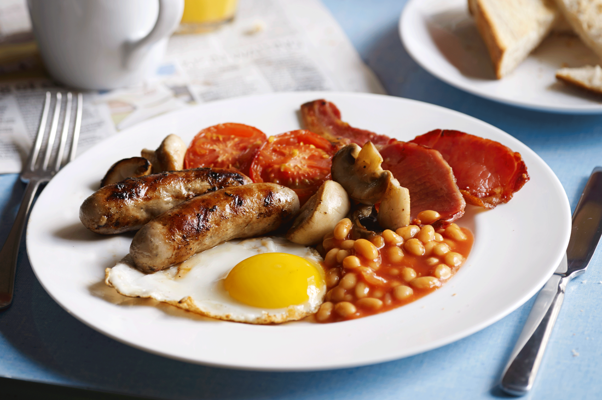

英格蘭經典四大天王
英格蘭的烹飪文化以其豐盛的傳統菜餚聞名。以下是幾道代表性的經典菜色：
- 炸魚薯條 (Fish and Chips)：國民美食，常在報紙上灑鹽和醋享用。
- 週日烤肉 (Sunday Roast)：家庭聚會的中心，通常包含烤牛肉、約克夏布丁和蔬菜。
- 牧羊人派 (Shepherd's Pie)：用羊肉末（或牛肉的 Cottage Pie）和馬鈴薯泥製成的派。
- 英式早餐 (Full English Breakfast)：豐盛的全套早餐，包含香腸、培根、雞蛋和烤豆等。
英格蘭美食曾被視為 非常單調且缺乏變化，但近年來，在亞洲和歐洲影響下，
其餐飲業已 獲得顯著提升，展現出多元化的風貌。
☕ 傳統下午茶與甜點 (Definition List)
- 英式下午茶 (Afternoon Tea)
- 一項優雅的社交儀式，包含三層架點心：三明治、司康 (Scone) 和各種甜點。常搭配伯爵茶享用。
- 司康 (Scone)
- 介於麵包和蛋糕之間的小圓點心，通常佐以德文郡奶油 (Clotted Cream) 和果醬。
- 約克夏布丁 (Yorkshire Pudding)
- 一種用麵糊烤製的鹹味配菜，質地酥脆內部蓬鬆，是週日烤肉中不可或缺的一部分。
🌍 菜色與配料一覽
| 主食名稱 | 核心配料 | 類型 |
|---|---|---|
| 炸魚薯條 (Fish and Chips) | 鱈魚或黑線鱈魚、馬鈴薯 | 街頭小吃 |
| 香腸馬鈴薯泥 (Bangers and Mash) | 英式香腸、馬鈴薯泥、洋蔥肉汁 | 酒吧經典 |
| 伊頓混亂 (Eton Mess) | 蛋白霜、草莓、鮮奶油 | 甜點 |
| 請注意，不同地區的烹飪方式略有差異。 | ||
英式早餐－  好吃
好吃
英式早餐 (Full English) 的豐盛程度令人難忘：
圖片僅供參考，實際內容可能因餐廳而異。